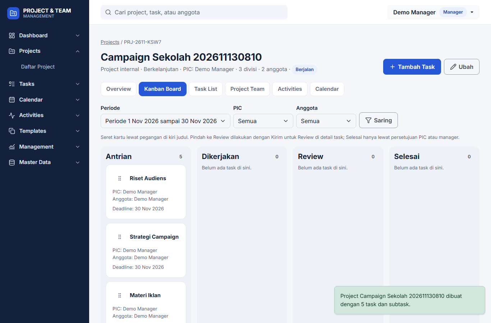
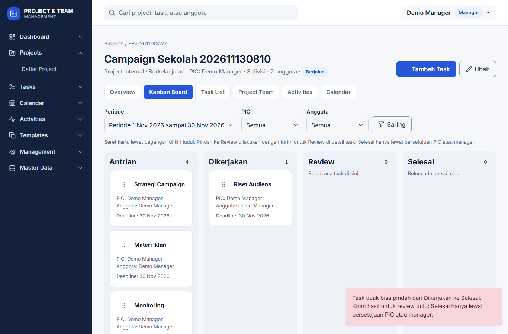
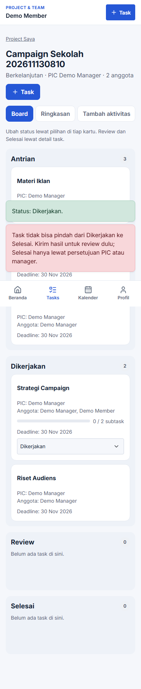
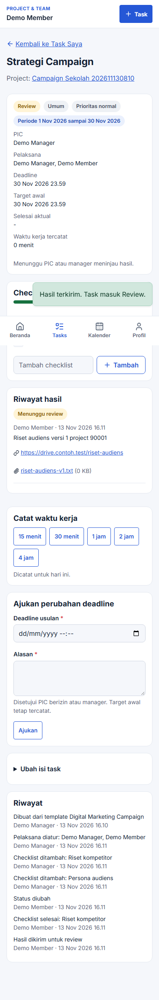
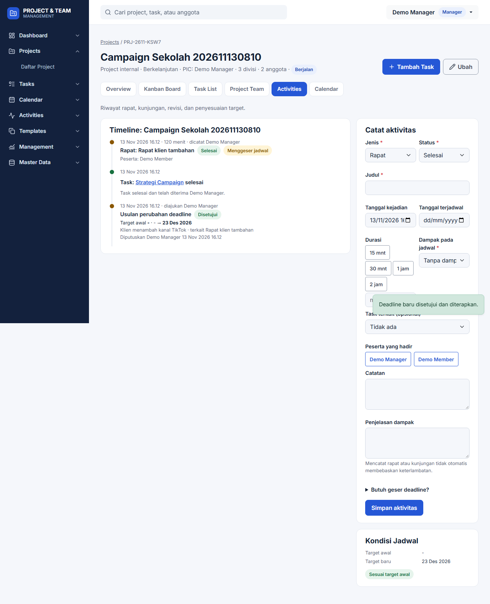
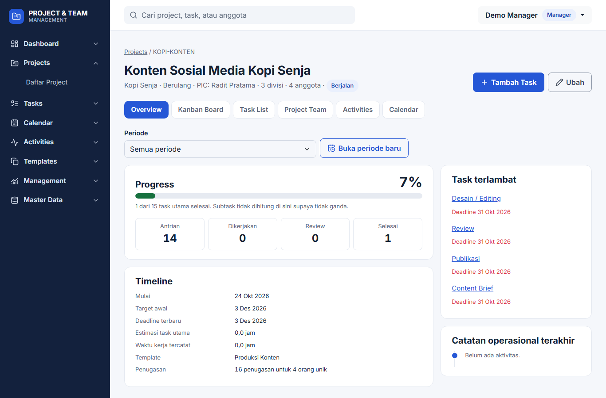
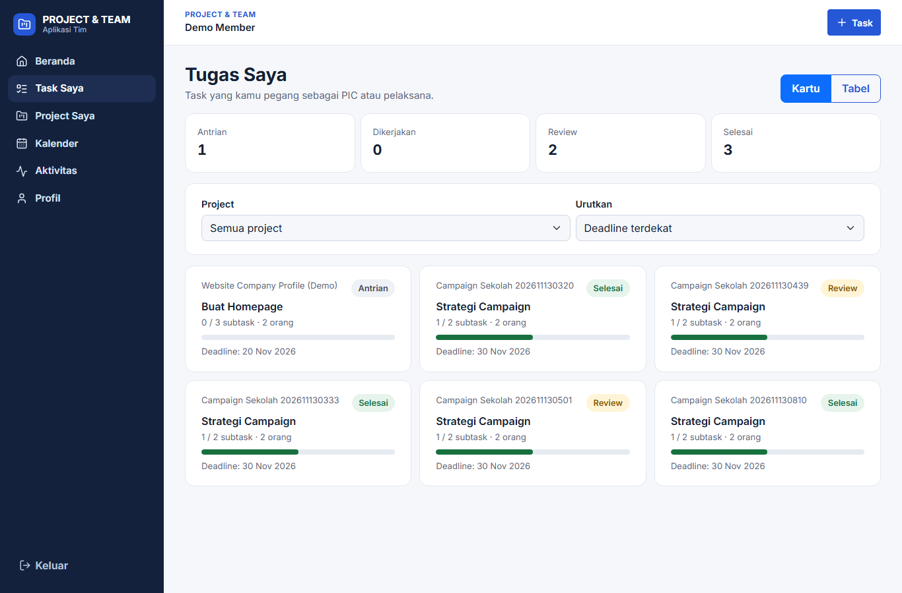
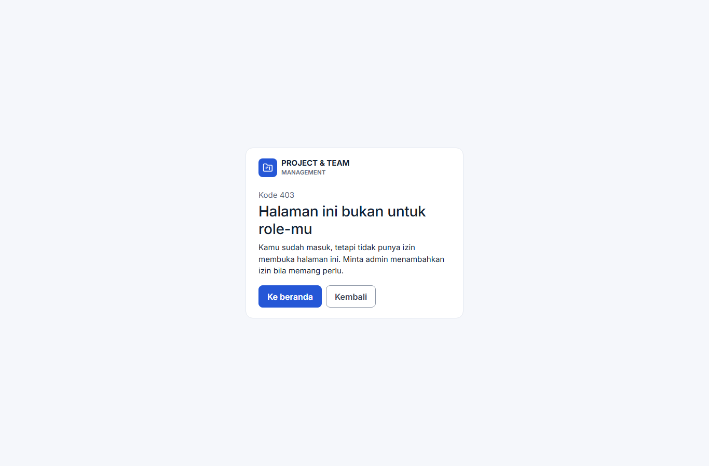
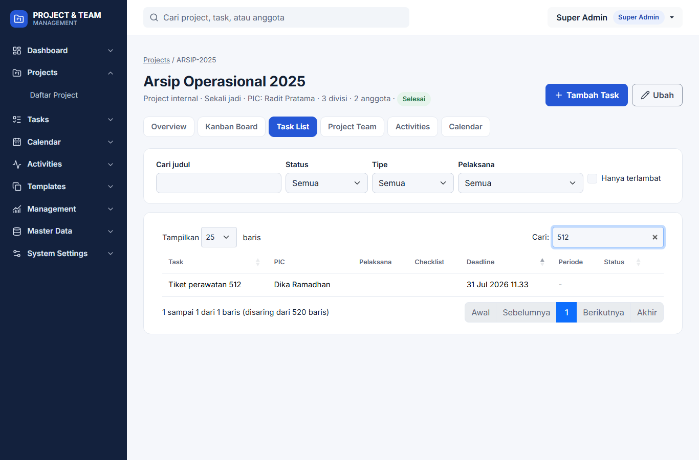

Checklist penerimaan 17 area (Petunjuk Teknis 11.2), 8 skenario wajib (11.3), langkah uji per peran, bukti, dan temuan. Diuji 13 November 2026, data sintetis.
Laravel 13.42.0 · Yajra DataTables 13.3.1 · Bootstrap 5.3.8 · SortableJS 1.15.7 · FullCalendar 6.1.22
| Peran | Langkah |
|---|---|
| Super Admin | Masuk ke Admin dengan akun Super Admin dari INITIAL_ADMIN_EMAIL. Buka setiap menu (9 menu, 23 submenu). Tambah Company, Client, Divisi, Jabatan, dan Anggota Tim. Ubah izin role Manager di Roles & Permissions, atur urutan menu, ubah zona waktu, buka Log aktivitas. |
| Manager | Masuk ke Admin sebagai demo.manager. Buat project dari template dengan tiga divisi, cek pratinjau. Seret task di Kanban, tinjau hasil di Menunggu Review (revisi beralasan, lalu terima), setujui perubahan deadline, buka periode baru project berulang, ekspor laporan. |
| Member | Masuk ke aplikasi Tim di HP sebagai demo.member. Buka Task Saya, ubah status lewat pilihan di kartu, centang checklist, kirim tautan dan berkas hasil, catat aktivitas. Coba buka alamat /management dan /settings/roles di Admin: harus muncul halaman tidak berizin. |
Diuji ulang dengan kode terbaru: tes Laravel kedua app ke database uji TiDB ptm_test, lalu uji peramban dua app lokal (:8101 dan :8102) yang memakai database uji terpisah ptm_e2e (migrasi, impor SQL modul, seeder dokumen).
| Revisi | Perubahan | Bukti |
|---|---|---|
| Penyimpanan lampiran | Disk shared di kedua app menunjuk admin-app/storage/app/private; lampiran hasil task dan foto profil dari Team App tersimpan di storage admin-app dan terbuka di kedua app; berkas lama di disk lama tetap terbaca; foto profil hanya untuk pemiliknya dan Super Admin; PTM_STORAGE_ROOT untuk server terpisah | SharedStorageTest (4 tes, sama di kedua app), e2e "berkas yang diunggah di Team App terbuka di Admin App (isi sama)" |
| Pembatasan akses data | Filter Company, Client, PIC, pelaksana, dan divisi di Projects, Tasks, Management diambil dari data dalam cakupan; daftar master Company, Client, Divisi, Jabatan, Anggota untuk Manager hanya company tempat ia anggota aktif; ubah lewat URL di luar cakupan 403 walau punya izin kelola; role Super Admin hanya bisa diberikan Super Admin; tabel Per divisi di Management ikut dibatasi (kebocoran ini ditemukan tes) | DataScopeTest (3 tes) |
| Akses project Team App | Daftar, ringkasan, Kanban, quick add, aktivitas, review, dan kalender Team App memakai satu aturan: project yang diikuti (keanggotaan aktif atau PIC), sesuai tabel 5.2 "Project Saya: project keanggotaan saja" (Scope::memberProjects). Sebelumnya daftar dan detail memakai aturan berbeda sehingga project lain di company bisa dibuka lewat URL. Admin App tetap memakai cakupan company untuk Manager | TeamProjectScopeTest (member, manager company sama, manager company lain; daftar, detail, Kanban, status task) |
| Instalasi Team App | Folder database Team App dihapus (seeder bawaan Test User, factory, migrasi kosong), skrip composer tanpa migrate, perintah migrate, migrate:status, migrate:fresh, db:seed, db:wipe ditolak dengan pesan | TeamInstallationTest (dijalankan sebagai proses artisan sungguhan) |
| Pengujian akhir | Semua tes dan bukti diperbarui (13 Nov 2026) | phpunit-admin-app.xml (63 tes), phpunit-team-app.xml (40 tes), e2e-flow.txt (18 lulus), smoke-admin.txt (53 halaman), smoke-team.txt (29 halaman), audit UI 102 pemeriksaan tanpa masalah |
Hasil terbaru 13 Nov 2026, setelah penyeragaman bahasa Inggris dan audit putaran kedua. Kode yang diuji: admin-app c8acb658d7ae, team-app f5038497a71d (hash tree git; docs/tools/release-check.py memastikan hash ini sama dengan kode di repositori). Tes Laravel ke database uji TiDB ptm_test; uji peramban ke dua app lokal (:8101, :8102) dengan database uji terpisah ptm_e2e; pasang bersih dari zip mengikuti README di bagian "Pasang bersih dari zip". Debugbar mati. Semua berkas bukti ada di folder ini.
| Bukti | Isi | Hasil |
|---|---|---|
phpunit-admin-app.xml | php artisan test admin-app (29 tes domain + 34 tes fitur), 13 Nov 2026 | 63 lulus, 0 gagal |
phpunit-team-app.xml | php artisan test team-app (29 tes domain identik + 11 tes fitur), 13 Nov 2026 | 40 lulus, 0 gagal |
e2e-flow.txt, e2e/*.png | Uji peramban sungguhan, dua app, HP 390 dan desktop 1366, termasuk berkas dari Team App dibuka di Admin App, timeline project, dan persetujuan deadline (13 Nov 2026) | 18 lulus, 0 gagal |
smoke-admin.txt | Super Admin, Manager, Member membuka setiap menu Admin (13 Nov 2026) | 53 halaman, 0 gagal |
smoke-team.txt | Ketiga role membuka setiap menu Tim + board, project, task (13 Nov 2026) | 29 halaman, 0 gagal |
../ui/AUDIT.md | axe, area klik 44/40 px, dan ukuran tabel 6.1 di 390 dan 1366 px (../ui/audit-admin.json 37 layar, 74 pemeriksaan; ../ui/audit-team-manager.json 2 layar, 4 pemeriksaan; ../ui/audit-team.json 12 layar, 24 pemeriksaan) | 102 pemeriksaan, 0 masalah |
../performance.md, ../debugbar.txt | Query per halaman, N+1, Debugbar | lihat berkas |
../../video/ptm-demo.mp4 | Video rekaman 8 skenario 11.3 dalam satu alur (Radit manager, Putri member), direkam 12 Nov 2026 sebelum perubahan tampilan 13 Nov | 3 menit 49 detik |
| Area | Kriteria | Status | Bukti |
|---|---|---|---|
| Autentikasi | Tanpa login tidak bisa membuka Admin/Tim; URL langsung ditolak Policy | Lulus | test_guest_is_redirected_to_login, test_guest_is_redirected_and_member_login_succeeds, e2e langkah Member 403 |
| Role & menu | Super Admin 9 menu, Member hanya menu berizin; menu tidak memberi akses backend | Lulus | test_dynamic_menu_follows_permissions (9/23, 8/20, 6/10), test_inactive_menu_is_hidden_but_route_stays_protected_by_policy, smoke-admin.txt |
| Audit Super Admin (4.1) | Semua aksi dicatat: setiap POST/PUT/PATCH/DELETE dari kedua app (termasuk masuk, keluar, dan aksi yang ditolak) masuk audit_logs dengan pengguna, role, route, isian, status; sandi dan token tidak disimpan; halaman Log Aktivitas hanya Super Admin | Lulus | AuditLogTest (5 tes: dicatat tanpa sandi, 403 tetap dicatat dan GET tidak, tamu tidak, pembersih isian, halaman hanya Super Admin), TeamAuditTest (app team) |
| Company / Client | Master terpisah, tanpa Client PIC | Lulus | test_super_admin_can_crud_companies (SoftDeletes), form Client tanpa PIC |
| Keanggotaan | Satu orang di beberapa divisi, anggota unik tidak ganda | Lulus | test_unique_members_are_not_double_counted_across_divisions, test_new_member_with_role_company_division_position_can_log_in |
| Multi assignee | Task >= 2 anggota; PIC task anggota project/assignee | Lulus | test_task_with_two_assignees_includes_pic, test_assignees_must_be_project_members, e2e "task punya 2 pelaksana" |
| Template | Template menghasilkan seluruh task/subtask dan bisa dipratinjau | Lulus | test_template_generates_all_tasks_and_subtasks..., test_preview_writes_nothing, test_failure_midway_rolls_back_everything, e2e pratinjau 5 task |
| Kanban | Empat kolom; drag desktop, dropdown HP, rollback saat API gagal | Lulus | e2e seret tersimpan, seret ke Selesai ditolak lalu kartu kembali, dropdown HP, test_rejected_kanban_status_returns_422_json_for_rollback |
| Checklist | Subtask satu tingkat; centang tersimpan tanpa halaman edit | Lulus | test_checklist_is_one_level_and_tracks_progress, e2e checklist HP bertahan setelah muat ulang |
| Review | Submission link/file, revisi beralasan, diterima menjadi done | Lulus | test_flow_start_submit_revise_then_approve, test_submission_requires_link_or_file, e2e kirim, revisi, terima |
| Deadline | Overdue terdeteksi; baseline tetap; reschedule perlu persetujuan | Lulus | test_only_approved_requests_change_deadline_and_baseline_stays, test_rejection_requires_reason..., test_dynamic_overdue_and_kpi_separate_unique_members_from_assignments |
| Activity | Rapat/kunjungan dengan peserta aktual dan dampak | Lulus | e2e aktivitas berpeserta + pengajuan deadline; validasi peserta anggota project |
| Calendar | Deadline, publikasi, kegiatan, selesai aktual terpisah | Lulus | test_calendar_modes_are_separate (bukan updated_at), test_calendar_only_shows_projects_in_scope, e2e mode Jadwal dan Selesai |
| Management | KPI sesuai query; anggota unik vs penugasan dibedakan | Lulus | test_dynamic_overdue_and_kpi_separate_unique_members_from_assignments, test_progress_is_calculated_in_yajra_list |
| Yajra | Daftar Admin server-side: cari, sort, page, filter, tindakan sesuai izin | Lulus | test_yajra_server_side_with_500_rows..., e2e DataTables 520 baris |
| Debugbar | Dev saja; tidak muncul ketika APP_DEBUG=false | Lulus | ../debugbar.txt (APP_DEBUG=false: 0 markup, /_debugbar/open 404), require-dev |
| Responsive | Bottom nav hanya HP, hilang di desktop tanpa ruang kosong | Lulus | test_bottom_nav_only_on_mobile_and_sidebar_only_on_desktop, e2e Tim 390 dan 1366 (padding bawah 28px), ../ui/audit-team.json |
| Performance | Tanpa N+1 utama; galat server ramah | Lulus | test_project_and_task_lists_have_no_n_plus_one, test_error_pages_are_friendly, ../performance.md |
| # | Skenario | Hasil | Bukti |
|---|---|---|---|
| 1 | Manager membuat Campaign Sekolah dari template; tiga divisi dipilih; task otomatis muncul | Lulus: pratinjau 5 task, project dibuat dengan 5 task di Antrian dan 3 divisi | e2e langkah 1, e2e/01-new-board.png |
| 2 | Task Landing Page dikerjakan dua orang; masing-masing melihat task sama di My Tasks | Lulus | test_collaborative_task_shows_in_my_tasks_for_both_assignees (team-app), e2e dua pelaksana |
| 3 | Member checklist, kirim link, PIC minta revisi, lalu menyetujui | Lulus | e2e langkah 4 dan 5, e2e/04-team-task-review-390.png |
| 4 | Rapat tambahan; pengajuan deadline disetujui; target awal tetap dapat ditinjau | Lulus | e2e langkah 6, e2e/05-activity-schedule.png |
| 5 | Project recurring memasuki periode baru tanpa menutup induk; kartu lama di periode sebelumnya | Lulus | e2e langkah 8 (Konten Sosial Media Kopi Senja), e2e/06-new-period.png, test_recurring_opens_new_period... |
| 6 | Halaman Tim 390 dan 1366; bottom nav hanya di HP | Lulus | e2e langkah 4 dan 9, e2e/03-team-board-390.png, e2e/07-team-1366.png |
| 7 | Member memaksa URL Admin/Management: 403/redirect aman | Lulus | e2e langkah 10, e2e/08-member-403.png, test_member_forcing_admin_urls_gets_403 |
| 8 | DataTables 500+ data: pagination/filter di server | Lulus: total 520, tiap permintaan 25 baris, halaman 2 start=25, cari "512" disaring server menjadi 1 | e2e langkah 11, e2e/09-datatables-520.png |
1. docs/tools/prepare-test-db.sh mengandaikan database ptm_test sudah ada; kini membuatnya dan memberi hak sendiri.
2. phpunit.xml merujuk folder tests/Unit yang kosong sehingga tidak ikut git; suite kosong itu dibuang.
3. Uji asap Tim sempat memakai project yang bukan milik Member; 403 yang muncul adalah perilaku benar, URL uji diganti ke project yang diikuti ketiga akun.
1. Pembuatan project gagal karena kolom is_active ambigu saat memeriksa anggota company; ditangkap tes domain, kolom diberi nama tabel.
2. Progres di daftar project dan checklist di daftar task selalu 0% karena select('tabel.*') menimpa withCount; urutan diperbaiki dan dijaga tes.
3. Yajra mengembalikan galat query sebagai JSON 200 berkunci error sehingga tes bisa lulus palsu; tes kini menolak respons bergalat.
4. $this->authorize() tidak tersedia karena Controller dasar Laravel 13 kosong; trait AuthorizesRequests ditambahkan.
5. @json multibaris di atribut Blade gagal dikompilasi (halaman daftar 500); diganti json_encode.
6. map('intval') mengirim kunci sebagai basis (dashboard 500); diganti fungsi panah.
7. Atribut data-pratinjau dipakai ganda di form dan wadah pratinjau; dinamai ulang.
8. Pesan tolak Kanban ke Selesai dibuat menjelaskan jalan yang benar (kirim hasil untuk review).
9. Bukti Debugbar pertama memakai APP_ENV=production; diulang dengan APP_DEBUG=false saja.
10. Audit axe: kontras lencana hijau, tombol sekunder, label paginasi, tabel bergulir, dan FullCalendar diperbaiki (lihat ../ui/AUDIT.md).
11. Saat merekam video, deadline usulan di form aktivitas sulit diisi dan mudah salah hari; ditambah tombol geser cepat +7/+14/+30 hari yang dihitung dari deadline sekarang (task terpilih, lalu project) dan baris "Deadline project sekarang", dijaga test_activity_form_shifts_deadline_from_current_due_date.
12. Petunjuk Teknis 4.1 meminta semua aksi Super Admin dicatat, sedangkan yang tercatat baru riwayat task (task_activities); ditambah tabel audit_logs lewat migrasi admin-app, middleware LogUserActions di kedua app, dan halaman Log Aktivitas (Pengaturan Sistem) khusus Super Admin.
13. Tes audit menemukan Simpan di Pengaturan Sistem selalu gagal (500) karena system_settings.setting_value bertipe JSON di SQL modul sedangkan nilainya disimpan sebagai teks biasa; model kini memakai cast JSON, dijaga SystemSettingsTest.
14. Baris per halaman tabel tersimpan di Pengaturan Sistem tetapi tabel selalu 25 baris; kini DataTables membaca nilainya.
15. Tes cakupan menemukan tabel Per divisi di Monitoring Divisi & Anggota menampilkan nama divisi company lain (angka 0); kini hanya divisi di company yang terlihat.
16. Tes penolak migrate di Team App sempat gagal mendeteksi: Laravel tidak meneruskan event perintah saat tes unit (runningUnitTests), jadi tes kini menjalankan php artisan sebagai proses terpisah dengan APP_ENV=local.
17. Halaman Log Aktivitas di HP 390 px memanjang karena kolom isian menyempit; tabel diberi lebar minimum dan digeser ke samping seperti tabel lain (tangkapan ../ui/admin-390-settings_audit.png).
18. Penyeragaman nama ke bahasa Inggris memutus 14 rujukan yang tidak tertangkap tes (dirinci di GUIDE-AUDIT.md bagian Konsistensi bahasa), antara lain tombol Buka periode baru, dua filter tabel, tombol geser deadline, simpan divisi anggota, tiga aturan validasi, dan filter cari yang bentrok dengan parameter search DataTables (galat 500). Ditemukan dengan membandingkan setiap string sebelum dan sesudah, memeriksa rujukan silang id dan nama isian, dan memindai kosakata; semuanya diperbaiki dan e2e dijalankan ulang.
19. Area klik 44x44 HP / 40x40 desktop (tabel 6.1) sebelumnya hanya dijaga pada tombol; pengukuran semua elemen yang bisa diklik di setiap halaman menemukan tautan, checkbox berlabel, judul lipatan, kepala tabel, paginasi, kontrol kalender, submenu, dan pegangan seret yang lebih kecil. Kini satu token --ptm-hit dan diukur otomatis (../ui/AUDIT.md).
20. Judul kartu dan kolom Kanban (H2) 16-16,8 px, di bawah 18-24 px tabel 6.1; kartu ringkasan status Tim padding 12 px. Diperbaiki dan diukur otomatis.
21. Timeline project belum memuat task selesai dan usulan perubahan deadline seperti gambar prototipe 7.3; kini satu timeline kronologis dengan kartu Kondisi Jadwal (ProjectTimelineTest). Tesnya menemukan galat 500 lama: pengajuan deadline tingkat task yang menunggu keputusan membuat halaman Activities project gagal karena relasi task dimuat tanpa project_id.
22. Kolom cari di kepala Admin hanya mencari task, sedangkan prototipe 7.1-7.3 bertuliskan "Cari project, task, atau anggota"; kini halaman Pencarian tiga kelompok dengan cakupan data masing-masing (GlobalSearchTest).
23. Detail task Team App belum punya tautan Kembali ke Task Saya seperti prototipe 7.4; ditambahkan.
24. Alat uji ikut diperiksa: pembuat dokumen UAT (build-uat.py) diam-diam melewati gambar yang tidak ada (kini berhenti dengan galat), pemeriksaan bottom navigation di audit UI tidak pernah aktif karena nama app lama, dan skrip database uji memeriksa variabel yang salah sehingga SQL tidak pernah diimpor.
Versi online: Admin App https://ptm-admin.vercel.app dan Team App https://ptm-team.vercel.app (Vercel Container Runtime), database TiDB Cloud Starter (kompatibel MySQL). Kode dan skema sama dengan versi lokal; yang ditambahkan hanya Dockerfile dan docker/ per app.
| Uji | Cara | Hasil |
|---|---|---|
| Migrasi + impor SQL modul ke TiDB | php artisan migrate --force lalu docs/tools/import-sql.php | lulus, 61 pernyataan, 40 tabel |
Tes Laravel ke database uji di TiDB (ptm_test) | php artisan test di kedua app | admin 41/41, tim 31/31 lulus |
Tes Laravel setelah log audit dan perbaikan Pengaturan Sistem (13 Nov 2026), ke ptm_test | php artisan migrate --force lalu php artisan test di kedua app | admin 47/47, tim 32/32 lulus (tes audit merah 4/5 sebelum tabel dimigrasi) |
| Semua menu 3 peran, data database online | docs/tools/smoke-test.mjs ke admin-app lokal yang tersambung ke TiDB | 0 gagal |
| Alur kerja ujung ke ujung, data database online | docs/tools/e2e-flow.mjs ke admin-app + team-app lokal yang tersambung ke TiDB ([online-db-flow.txt](online-db-flow.txt)) | 15 lulus, 0 gagal |
| Pemeriksaan dari luar | /up dan /masuk (kini /login) kedua app, formulir dan cookie, halaman 404 | 200; formulir memakai https; cookie sesi secure dan httponly; sesi tercatat di database online; 404 tanpa jejak debug; Debugbar tidak terpasang |
| Uji langsung di alamat online dengan masuk akun (3 peran + alur kerja) | smoke-test.mjs + e2e-flow.mjs dengan E2E_ADMIN=https://ptm-admin.vercel.app dan E2E_TEAM=https://ptm-team.vercel.app | menunggu dijalankan pemilik akun demo |








